Next: Evaluating results - Graphical Up: Dynamical Susceptibility and Excitations Previous: DMD - formalism Contents Index
Physical observables are related to operators such as the magnetic moment components or the scattering operators. We now introduce a series of observables 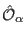 ( 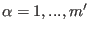) for each subsystem 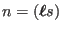 and define a corresponding correlation function and dynamical susceptibility. The correlation function we denote as 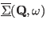
Note that the observables
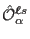 may have some  dependence (for example if we
consider the Fourier transform of a magnetisation density of
a magnetic ion in a crystal [49]). We
omit this
dependence (for example if we
consider the Fourier transform of a magnetisation density of
a magnetic ion in a crystal [49]). We
omit this  dependence to make notation easier but will come back to it when considering
the calculation of the neutron scattering cross section.
dependence to make notation easier but will come back to it when considering
the calculation of the neutron scattering cross section.
Using the fluctuation-dissipation theorem 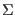 can be related to a dynamical susceptibility 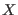:
However, in contrast to the dynamical susceptibility 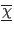, based on the operators 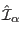, the susceptibility 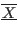 cannot be obtained from solving the MF-RPA equation (226). The reason is that the derivation of (226) makes use of the dynamical evolution of the operators and not of the observables .
Nonetheless, general properties of dynamical susceptibilities may be used
to get a relation between
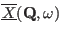 and
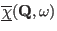.
In general a dynamical susceptibility
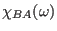 describes the response of
a physical observable
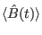 to a perturbation of the system described by
an operator  .
In the case of the dynamical susceptibility corresponding to the observables
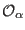 we therefore have to
set
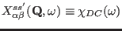 with the definitions
.
In the case of the dynamical susceptibility corresponding to the observables
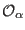 we therefore have to
set
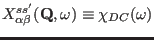 with the definitions
| 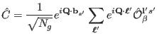 | (228) | ||
| 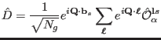 | (229) |
From linear response theory it can be shown [1, page 143], that the dynamical susceptibilities have poles at the excitation energies of the system: In equation (216) the denominator, the eigenstates and the difference in thermal population are the same for any susceptibility. The energy eigenstates 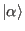 of the system will be a linear combination of direct products involving single ion states. Therefore, the numerator in equation (216) will be a (usually not known) linear combination of products of the form 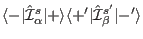 and 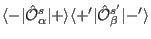 for 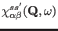 and 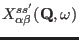, respectively.
These terms can be related by a similar procedure to that outlined in equations (230) ff. We define the matrices,
similar to the 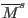 of equation (230), however, omitting the thermal population factors and expectation values. These matrices can be diagonalised using the unitary transformations 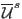 ( 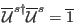) and 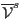 ( 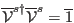), respectively.
Again, all eigenvalues are zero except for 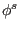 and 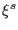, respectively.
In [35] these transformations are used to derive the following expression for the dynamical susceptibility
Equation (247) shows how knowledge of the dynamical susceptibility calculated on the basis of the interaction operators between subsystems ( 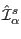) may be used to obtain the dynamical susceptibility for any set of observables of the system.
The standard procedure to avoid divergences is to substitute  with
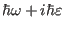 and
take the limit for
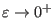. Using Dirac's formula
with
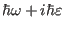 and
take the limit for
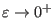. Using Dirac's formula
the absorptive part of the dynamical susceptibility (240) becomes
and the correlation function 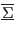 can be evaluated by applying the fluctuation dissipation theorem (239):
To keep notation simple, the  dependence of the eigenvectors
dependence of the eigenvectors
 and the energies 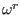 has been omitted.
If the observable
depends explicitly on
and the energies 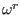 has been omitted.
If the observable
depends explicitly on  , then also
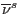 and thus
will depend on
, then also
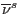 and thus
will depend on  .
This very fundamental result will be applied to the neutron scattering cross section
in section M.
.
This very fundamental result will be applied to the neutron scattering cross section
in section M.
The elastic contribution to equations (249) and
(250) has to be evaluated taking into account
a small but finite value for the energy shift  introduced
in the discussion of equation (227). It turns
out, that 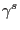 and and thus also
the dynamical matrix and its eigenvalues
are proportional to
introduced
in the discussion of equation (227). It turns
out, that 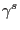 and and thus also
the dynamical matrix and its eigenvalues
are proportional to  . Making use of the normalisation
for the eigenvectors
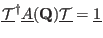
we find that the dynamical susceptibility (249)
is proportional to
. Making use of the normalisation
for the eigenvectors
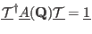
we find that the dynamical susceptibility (249)
is proportional to  and thus zero in the limit of
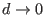. However, in the correlation function
(250) the denominator is proportional to
and thus zero in the limit of
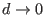. However, in the correlation function
(250) the denominator is proportional to
 leading to a finite result for the quasielastic response.
leading to a finite result for the quasielastic response.